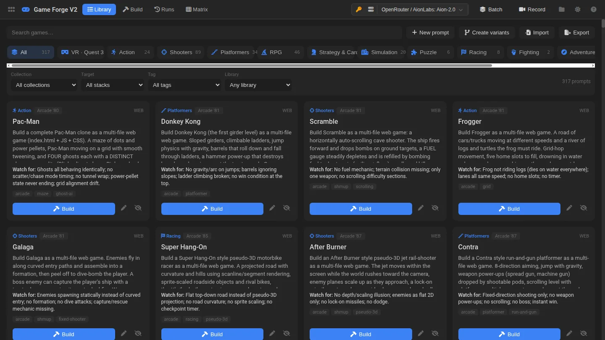

How it’s built · Agentic game builder
Game Forge
Ask a model for “a game in one file” and you learn very little about whether it can manage a real project. Game Forge gives the model file tools and a budget and lets it build a complete multi-file game. Then the app runs what was built, checks it and keeps it, so builds can be compared rather than taken on trust.
- 339game briefs, 1980 arcade to modern indie
- 1,000+builds kept and comparable
- 7coding agents usable as builders
- 128unit tests on the app’s services

How a build runs
- BriefA curated prompt plus its target stack and pinned libraries.
- Agentic loopThe model lists, reads, writes and edits files, then calls
report_done. - Live previewEach turn’s files are assembled and the game boots in a sandbox while it is still being built.
- ChecksDiagnostics capture errors, failed loads and a screenshot from the running game.
- CompareEvery run is kept with its trace, rated, and laid side by side with other models’ runs.
Design decisions
A previewer that runs real projects
Generated games are folders, not single files. The previewer turns every file into a blob URL, rewrites script, stylesheet, image and CSS url() references and import maps to match, and boots the entry page in a sandboxed frame.
Nothing is overwritten
Runs are append-only: the project, a forge.json record and the full tool-call trace are saved per run. Re-running a brief adds a contender instead of replacing one.
Pinned, hash-checked libraries
When a brief allows an engine such as Phaser, Babylon or three.js, the exact file is copied into the project and checked by SHA-256, so a build plays the same way months later.
One kernel, several forges
The build loop, tools, budgets, run store and previewer live in a shared kernel. VR Forge and Application Forge reuse it, and the Game Forge services are thin adapters over it.
Problems worth solving
- Models that loop. One model spent 40 turns rewriting the same 40 files and never finished. Turn limits are a poor guard, so a progress tracker hashes file contents each turn. Two turns with no progress get a nudge; four end the run as “stuck”; a file rewritten six times is flagged even when its content keeps changing.
- External coding agents. Claude Code, Codex, Antigravity and others run as builders through a small local bridge. Each runs in a jailed project folder, and its output is normalised into one event stream for the trace. The first version deadlocked because the agent’s stderr pipe filled up; the bridge now drains it on its own thread.
- Agents outliving the tab. The bridge owns the process, so reloading the page used to leave a build running unseen. The bridge now keeps a registry of runs, and the toolbar shows any live agent with a Stop button.
- Playing builds safely on this site. Model-written code must not run with access to this site’s storage. Showcase builds run in an opaque-origin sandbox. Such a frame cannot load its parent’s blob URLs, so the frame receives the files and builds the preview itself.
An early bake-off on the same Pac-Man brief showed how differently agents work: one took 19 minutes over 18 turns, another finished in four and a half minutes in a single turn, and a third in under a minute. All three games ran.